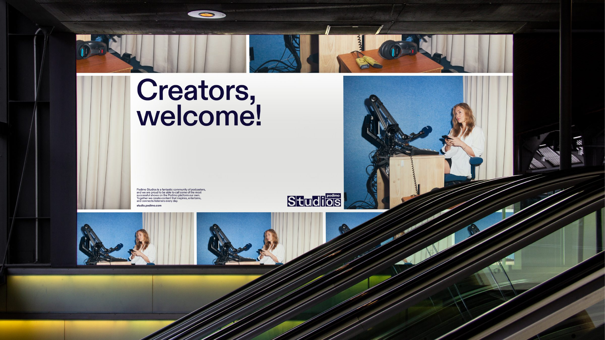
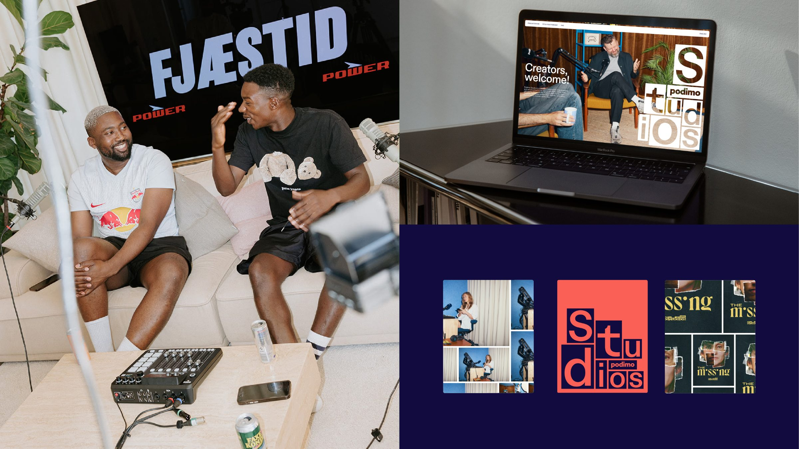
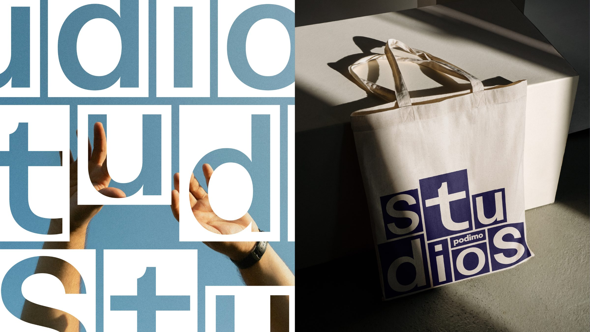
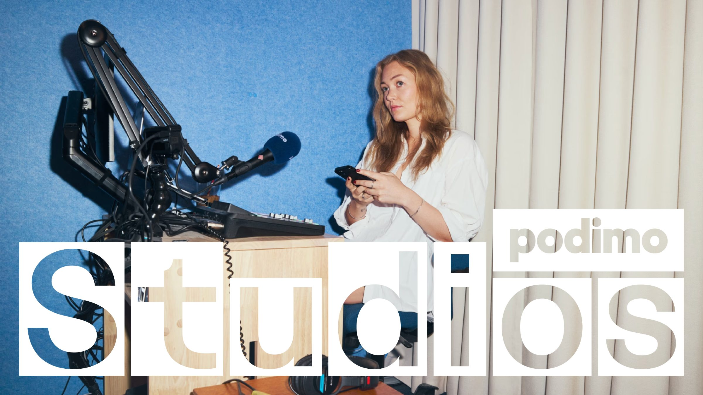
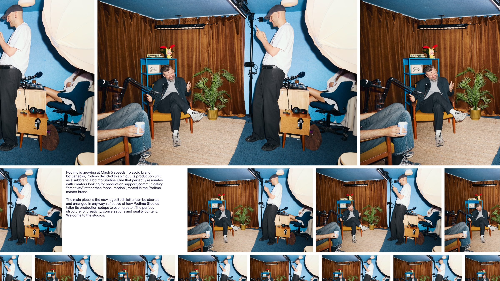
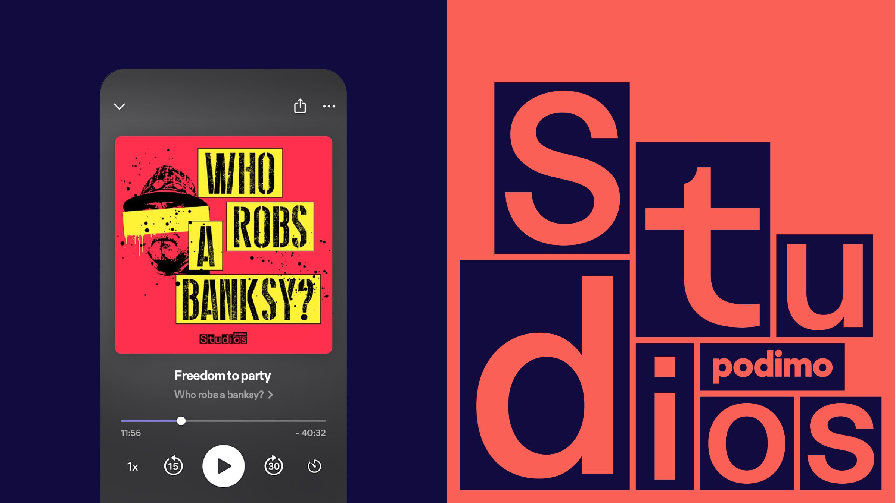
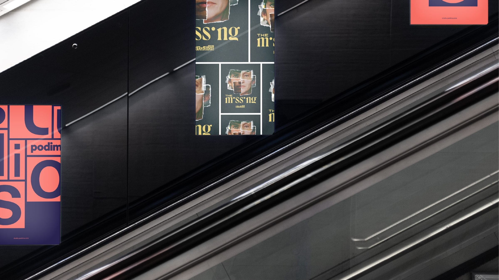

When a platform grows this fast, the brand becomes the bottleneck. Podimo Studios spins the production unit out as a creator-facing sub-brand: built for the people who make the shows, rooted in the master brand that carries them.
Podimo was growing at Mach 5 speeds, and the master brand was doing two jobs at once: selling listening to audiences and selling production partnership to creators. To avoid a brand bottleneck, the production unit was spun out as its own sub-brand, one that resonates with creators looking for production support.
The strategic shift is a single word swap: Podimo Studios communicates creativity rather than consumption. It speaks to the people who make, while staying visibly rooted in the master brand that reaches the people who listen.
The centerpiece is the logo itself. Each letter can be stacked and arranged in any configuration, a direct reflection of how Podimo Studios tailors its production setup to each creator. No two setups alike, every one unmistakably the same studio.
The perfect structure for creativity, conversations, and quality content. Welcome to the studios.


Within the Brand & Creative mandate, this is the Brand Systems lane doing its job: the master brand and its sub-brands built as one coherent system that can open a new voice for a new audience without fracturing. The consumer brand keeps selling stories; Studios sells the room they get made in.





A brand identity's results are strategic before they are numeric. What this one changed: